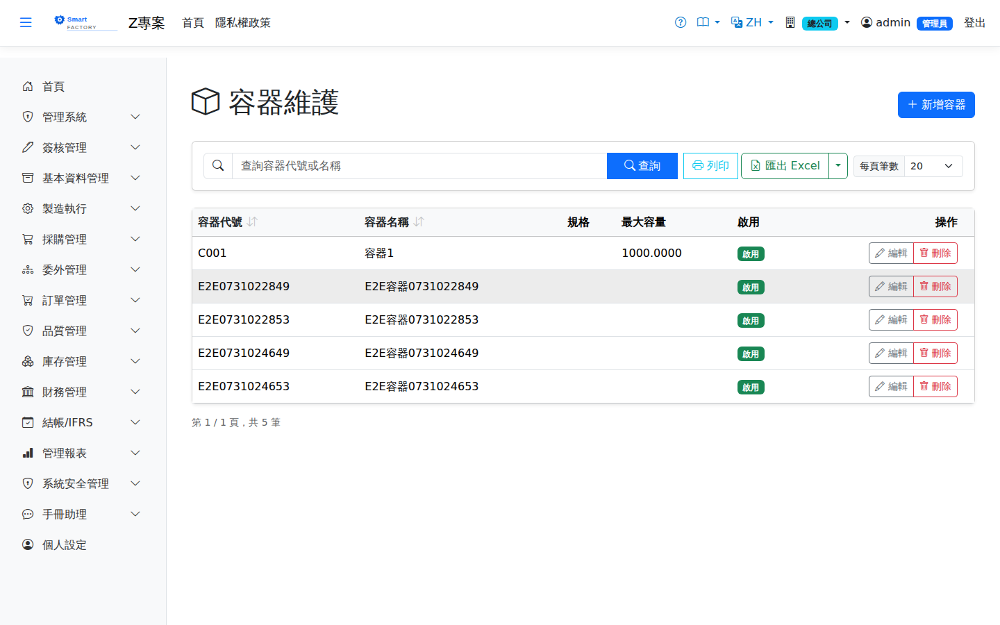

容器主檔Container Master
路由：/BAS/Container | 物料容器/包裝規格代碼維護Route: /BAS/Container | Material container and packaging type codes
容器主檔定義物料存放或搬運所使用的容器種類（例如棧板、週轉箱、料袋），不是一個個實體箱子。目前用在三處：途程工序的開工／完工容器（定量轉移時以容量帶出每批數量）、報工選擇容器、完工入庫的分箱入庫（以容量作為每箱數量預設）。一個一個實體箱子（固定 QR 標籤、重複使用）在箱子（容器個體）畫面管理。The container master defines the container types used to hold or move material (pallets, tote boxes, material bags), not individual physical boxes. It is used in three places today: the input and output containers of a routing operation (with fixed-quantity transfer, the capacity fills in the batch quantity), choosing a container when reporting production, and receiving by box in production completion (the capacity is the default quantity per box). Individual physical boxes (fixed QR labels, reused) are managed on the Boxes (Container Units) screen.

容器畫面截圖（示意，實際欄位/資料依權限與查詢條件而異）Container screenshot (illustrative; actual fields and data vary by permission and query criteria)
欄位說明Field reference
| 欄位名稱Field | 必填Required | 說明Guide |
|---|---|---|
| 容器代碼Container | 必填Required | 唯一識別碼，最多 30 字（例：PALLET、TRAY、BAG）Unique code, up to 30 characters (e.g. PALLET, TRAY, BAG) |
| 容器名稱Container Name | 必填Required | 完整名稱（例：棧板、周轉箱、料袋）Full name (e.g. pallet, tote box, material bag) |
| 規格Spec | 尺寸、材質等說明Size, material and similar details | |
| 最大容量Max Capacity | 一個容器裝幾個（以品號的庫存單位計）；途程定量轉移與完工入庫分箱以它作為預設數量How many one container holds (in the item's stock unit); routings and receiving by box use it as the prefilled quantity | |
| 是否啟用Active | 停用後不會出現在報工與完工入庫的容器選單中Once inactive, it no longer appears in the container lists for production reports and production completion |
操作步驟Steps
1
進入「基本資料 > 容器主檔」，點「新增」。Go to "Basic Data > Container Master" and click "Add".
2
填入容器代碼（如 PALLET）與名稱（如 棧板）。Enter the container code (e.g. PALLET) and name (e.g. Pallet).
3
點「儲存」即完成。Click "Save" and you are done.
容器代碼建議使用易辨識的英文縮寫（PALLET / BOX / TRAY / BAG），方便倉庫人員在盤點與揀貨時快速辨識。Use easily recognizable abbreviations for container codes (PALLET / BOX / TRAY / BAG) so warehouse staff can identify them quickly when counting and picking.